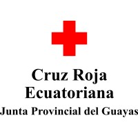

La Cruz Roja Ecuatoriana es una organización humanitaria sin fines de lucro que brinda asistencia en emergencias y desastres naturales, promueve la salud y el bienestar, y fomenta la cultura de la paz. Nuestra misión es aliviar el sufrimiento humano, proteger la vida y la salud, y garantizar el respeto por la dignidad humana.
